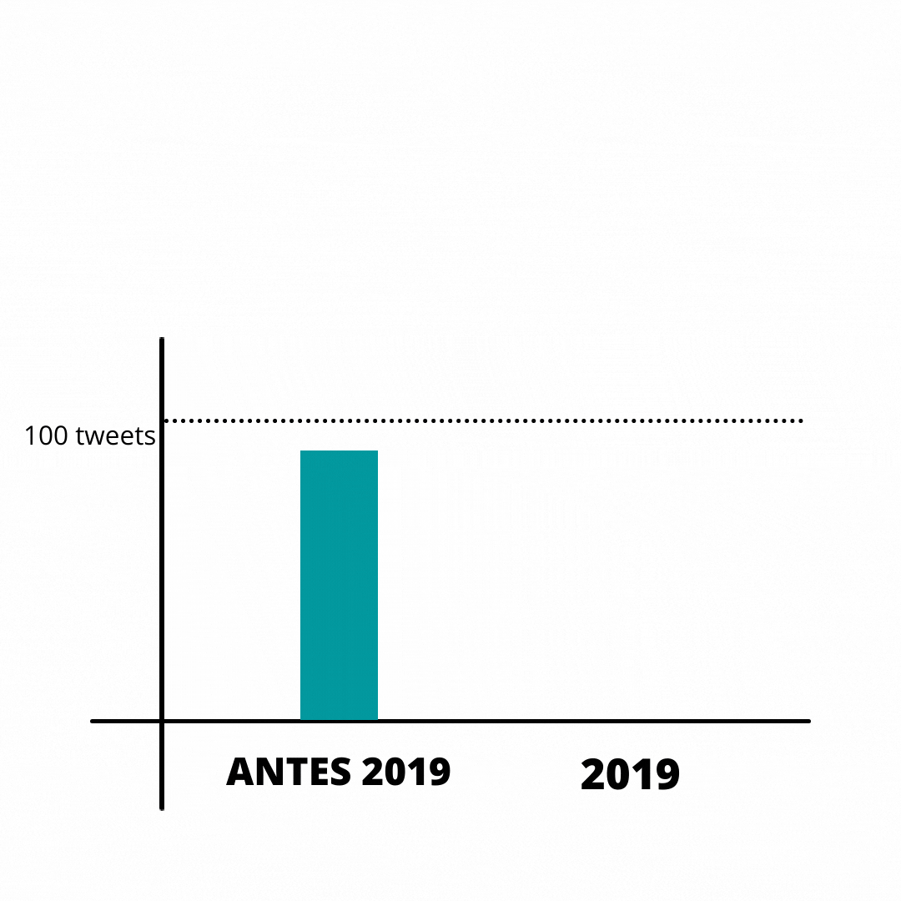
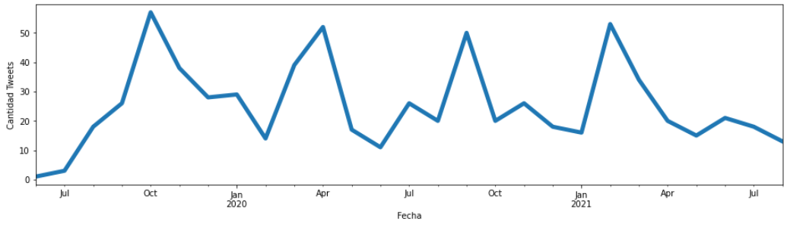
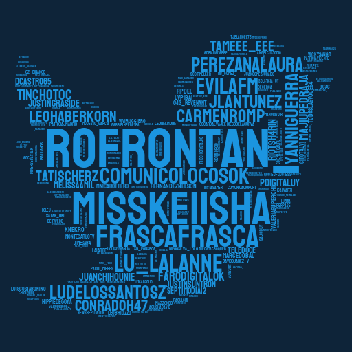

Hace un par de semanas en clase con Christian Font hablabamos sobre ¿de qué estamos hechos?. Por ahí tiramos recuerdos, situaciones, aprendizajes, dichos, sueños...
Esa semana también me estaba adentrando en el análisis de datos de twitter y que pensé que a diferencia de los dichos en la vida real, los tweets son archivables, repetibles, compartibles y sobre todo analizables.
Así que decidí hacer eso mismo y analizar mis tweets y mi cuenta para ver de que estaba hecha.
Lo primero fue aprender a como extraer los datos que necesitaba, para eso use la API de Twitter y Tweepy(un modulo de python bastante copado para facilitar el proceso).
Así extraje los datos básicos de mi usuario con una función básica de Tweepy
Hasta ahí todo tranqui, sencillito, creé mi cuenta el viernes 27 de septiembre de 2013 a las 9 de la noche, seguramente producto del aburrimiento.
Lo interesante vino después cuando extraje todos mis tweets y luego de varios intentos y las típicas frustraciones iniciales comencé a analizarlos.
Mi primer tweet se hizo esperar, demoré más de un mes en hacerlo y desde ese hasta hoy, hice 816 tweets/retweets. Algo que me llamó mucho la atención también es que borré al menos 36 de esos tweets.
Luego me sentí re en mi salsa y me puse a analizar mi actividad.
Como bien sabía, durante muchos años no fui casi nada activo en esta red, la usaba más que nada para seguir algún influencer o enterarme de noticias del ambiente de los videojuegos y poco más, raramente twitteaba.

Tanto que al revisar mi actividad entre finales del 2013 y mediados del 2019 encontré que tan solo realicé 92 tweets, a un exorbitante ritmo de casi 2 tweets por mes, una locura.
Pero todo cambia desde ahí, porque a partir del 2019 mi actividad aumenta un montón, imaginate que en el segundo semestre de ese año hice casi el doble de tweets de los que había hecho hasta ese momento.
Y este aumento se explica porque en ese año me pasó algo re copado, arranqué la facultad y... arranqué a quejarme de la facu, ahre.
Hilando fino me di cuenta que soy más activo durante los meses de clase, supongo que me gusta distraerme en twitter durante las clases por zoom como el resto de la gente copada.
Na pero resulta que varios facuamigues usaban twitter ahí que empecé a interactuar más con elles y también con profes(because lambeta).
Ahí es cuando me di cuenta que de todos los tweets que he hecho el 65% fueron en respuesta a alguien.
Entonces dije ya que estoy, voy a ver con quién interactúo más y casi muero en el intento de hacer una nube de usuarios.
Hablando de interacciones me fui a buscar mi tweet con más likes y me encontré con este, por lejos mi mayor momento de fama:
Pero definitivamente mi momento favorito en twitter fue cuando mi padre no reconocido El Gran Gustaf le dio like a este tweet:
Aunque no todo es fiesta, en este mini investigación quise aprovechar y revisar el sentiment de mis tweets y tengo un porcentaje alto (para mi gusto) de tweets negativos y eso es algo que me gustaría tener más en cuenta de ahora en adelante.
Y es que a partir de ahora voy a estar publicando hilos sobre análisis de datos y tal vez en un futuro analice nuevamente mi cuenta para ver los cambios que pueda haber.
Aunque todavía está un poco en proceso también voy a estar dejando el código con el cual estuve trabajando en este repositorio.